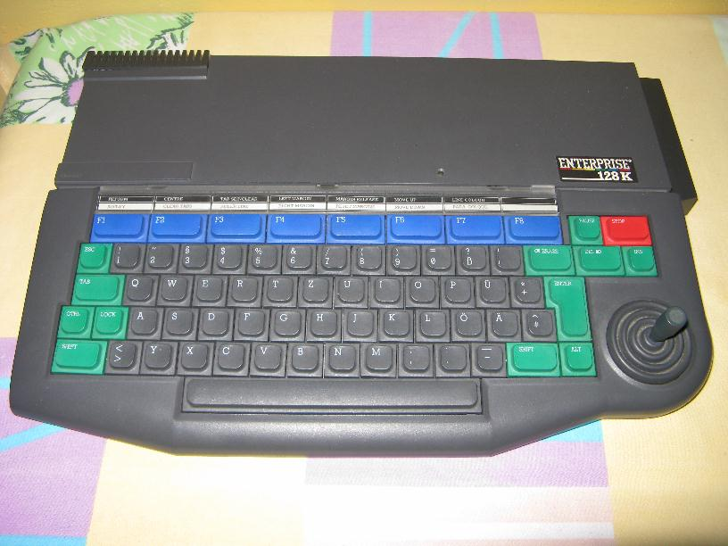

ELAN COMPUTERS LTD
ENTERPRISE 128K

Ten komputer jest prawdziwym rarytasem. Na naszym rynku pojawił się na przełomie lat 80 i 90 ubiegłego wieku. Produkowany przez firmę Elan Computers Ltd z Wielkiej Brytanii w wersjach 64k i 128k RAM. Cieszył się dużą popularnością na Węgrzech.
Procesor Z80A / 4MHz.
RAM 128kB rozszerzalna do 4MB.
ROM 32 rozszerzalny do 64kB.
Rozdzielczość maksymalna 672 X 256 w 256 kolorach.
Grafika 256 kolorów
Tekst 28 linii po 84 znaki.
Zewnętrzne peryferia: 2 pamięci taąmowe, drukarka, stacja dysków 3,5".
Dźwięk: Trzykanałowy generator dźwięku 8 oktaw, stereo + 1 kanał szumów.